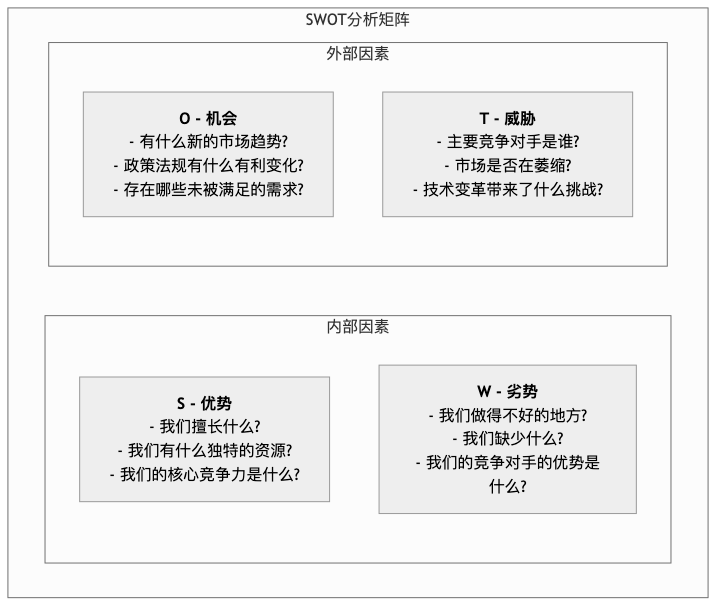

SWOT分析¶
SWOT分析是一种极其经典且功能强大的战略规划框架，旨在帮助一个组织、项目甚至个人，系统性地审视其内部的优势 (Strengths) 与 劣势 (Weaknesses)，并评估外部环境中的 机会 (Opportunities) 和 威胁 (Threats)。它的核心价值在于，通过将这四个维度清晰地呈现出来，为制定精准、务实的未来战略提供坚实的基础，回答“我们现在在哪？”和“我们未来要去哪？”这两个根本性问题。
理解SWOT的四个维度¶
SWOT分析的精髓在于其简洁而深刻的四维矩阵，它将所有影响目标的因素清晰地划分为内部和外部两大类。
-
内部因素：这是指组织自身可以控制或改变的资源和能力。它们是审视自我的镜子。
- 优势 (S)：指的是那些让组织在竞争中脱颖而出的独特能力或宝贵资源。这可能是先进的技术专利、忠诚的客户群体、高效的运营流程，或是强大的品牌声誉。发现优势是为了思考如何将其最大化地利用。
- 劣势 (W)：指的是组织内部的短板或限制其发展的方面。这可能包括资金短缺、技术过时、供应链不稳定，或是缺乏关键人才。正视劣势是为了思考如何弥补或规避它们带来的负面影响。
-
外部因素：这是指存在于组织之外的宏观环境力量，组织通常难以直接控制，但必须积极适应或加以利用。它们是眺望世界的窗口。
- 机会 (O)：指的是外部环境中可能为组织带来增长和发展的有利趋势。例如，一个新兴市场的崛起、一项有利的政府新政策、消费者行为的积极转变，或是竞争对手的战略失误。
- 威胁 (T)：指的是外部环境中可能对组织造成损害或带来挑战的不利趋势。这可能包括新竞争者的涌入、颠覆性技术的出现、更严格的行业监管，或是宏观经济的衰退。
SWOT分析矩阵模板¶
为了更直观地进行分析，我们通常使用一个2x2的矩阵来组织这些想法。

如何进行SWOT分析¶
一次有效的SWOT分析远不止是简单地列出清单，它是一个发现洞察、并最终指导行动的完整过程。
-
明确分析目标
在开始之前，必须清晰地定义分析的主体。我们是在为整个公司制定五年战略，还是在评估一个新产品的市场可行性，抑或是规划个人的职业发展路径？明确的目标是确保分析不偏离方向的前提。
-
信息收集与头脑风暴
召集一个跨职能的团队，围绕SWOT的四个维度进行开放式的头脑风暴。在这一阶段，关键在于广度而非深度，鼓励所有参与者从自己的视角出发，尽可能多地列出所有相关的因素。
-
评估并确定关键因素
头脑风暴会产生大量信息。下一步是团队共同对所有因素进行评估和筛选，识别出那些对目标影响最深远、最关键的少数几个因素。例如，在众多优势中，哪一个才是真正的“核心竞争力”？
-
通过TOWS矩阵制定战略
这是SWOT分析中最具价值的一步，即通过交叉分析，将洞察转化为战略。这通常被称为TOWS矩阵分析法，它提供了四种核心的战略思考路径： * SO - 增长型战略 (Maxi-Maxi)：思考如何利用我们的核心优势，去最大化地抓住外部的关键机会。这是最理想的进攻策略。 * WO - 扭转型战略 (Mini-Maxi)：思考如何利用外部的机会，来弥补或克服我们的内部劣势。例如，通过与技术领先的公司合作（机会）来弥补自身研发能力的不足（劣势）。 * ST - 防御型战略 (Maxi-Mini)：思考如何利用我们的优势，去最大化地规避或减轻外部环境的威胁。例如，利用强大的品牌忠诚度（优势）来抵御新竞争者的价格战（威胁）。 * WT - 收缩或多元化战略 (Mini-Mini)：当内部劣势与外部威胁迎面相撞时，需要制定旨在最小化损失的防御性策略，这可能意味着需要收缩业务、寻求合并，或彻底转型。
应用案例¶
案例一：一家希望拓展业务的本地精品咖啡馆
- 背景：这家咖啡馆以其独特的手冲技术和舒适的社区氛围在本地小有名气（优势），但店面狭小，线上营销几乎为零（劣势）。最近，周边大型科技园区的入驻带来了大量潜在客户（机会），但一家知名的连锁咖啡品牌也即将在附近开业（威胁）。
- SO战略：利用其手冲技术优势，面向科技园区推出“精品咖啡外送及月度订购”服务，抓住新增的客户流（机会）。
- WO战略：积极与线上外卖平台合作（机会），以弥补自身线上营销和配送能力的不足（劣势）。
- ST战略：通过举办更多社区文化沙龙和会员活动，深化与老顾客的情感连接（优势），以构建抵御连锁品牌冲击（威胁）的“护城河”。
案例二：一家传统的软件公司面临云时代的挑战
- 背景：该公司拥有一个庞大而稳定的企业客户群（优势），但其核心产品是基于过时的桌面架构，研发团队对云计算技术掌握不足（劣势）。市场趋势是所有服务都在向云端迁移（机会），同时，多家灵活的云原生SaaS初创公司正在蚕食其市场份额（威胁）。
- WT战略：由于研发能力不足（劣势）且面临强大的市场颠覆（威胁），公司决定剥离非核心的桌面软件业务，将资源集中，同时启动一项收购计划，寻求并购一家有成熟云技术的初创公司，以求彻底转型。
案例三：一名资深营销经理的职业转型规划
- 背景：这位经理拥有丰富的品牌推广经验和人脉资源（优势），但对新兴的数据分析和算法推荐技术感到陌生（劣势）。当前，数字营销领域对既懂品牌又懂数据的复合型人才需求激增（机会），而许多年轻的求职者虽然技术新，但缺乏战略眼光（威胁）。
- WO战略：报名参加一个系统的数据科学课程（机会），以弥补自己在数据分析方面的短板（劣势），从而成为市场上稀缺的复合型高端人才。
SWOT分析的价值与局限¶
核心价值
- 结构化思维：它提供了一个简单而强大的框架，迫使我们将思考组织化、全面化。
- 促进共识：作为一个团队工具，它能有效地促进成员间的沟通，并围绕关键议题达成共识。
- 应用灵活：其应用场景极其广泛，大到国家战略，小到个人选择，都可以运用自如。
潜在局限
- 静态快照：SWOT分析的结果本质上是静态的，它反映的是某一特定时间点的情况。在快速变化的环境中，分析结果可能很快过时。
- 简化倾向：有时，为了将复杂问题填入矩阵，可能会出现过度简化的风险，忽略了因素之间的动态联系。
- 缺乏行动指引：如果仅仅停留在列出S、W、O、T，而没有进行后续的TOWS战略分析，那么SWOT就只是一个清单，无法自动生成解决方案。
延伸与关联¶
为了进行更深入的分析，SWOT常常与其他工具结合使用： * PESTEL分析：可以为SWOT中的“机会”和“威胁”部分提供更系统、更宏观的视角，深入分析政治(P)、经济(E)、社会(S)、技术(T)、环境(E)和法律(L)等外部因素。 * 波特五力模型：当“威胁”主要来自行业竞争时，该模型能提供一个更精细的分析框架。 * 价值链分析：可以帮助系统地审视组织的各项活动，从而更准确地识别其核心的“优势”与“劣势”。
来源参考：Heinz Weihrich 的经典论文 "The TOWS Matrix—A Tool for Situational 分析" (1982) 首次系统性地将SWOT矩阵与战略制定相结合。